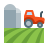

<mat-toolbar class="header mat-elevation-z4">
    <span>
        <a routerLink="/unidade-de-medida/">
            
        </a>
    </span>
    <span class="title-group">
        <a routerLink="/unidade-de-medida/">
            <i class="material-icons">
                home
            </i>
            Gestão Agrícola
        </a>
    </span>
</mat-toolbar>
